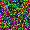
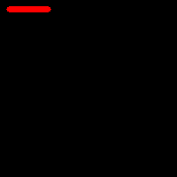
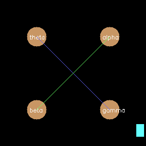
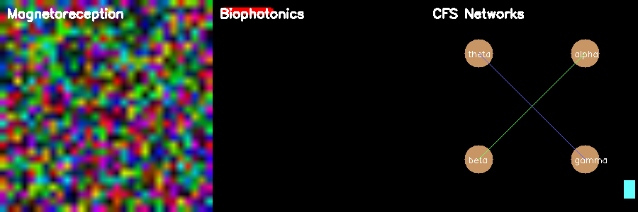

CFS Animal Sensory Translator
Translating Animal Sensory Capabilities into Human-Perceivable Visualizations
Overview
The CFS Animal Sensory Translator is a computational framework that translates animal sensory inputs (electromagnetic, biophotonic, neural oscillations) into human-perceivable visual representations based on the Cross-Frequency Synchronization (CFS) coherence model.
This program reveals the invisible sensory worlds that animals perceive through their enhanced electromagnetic, biophotonic, and neural processing capabilities, potentially uncovering CFS coherence networks that connect biological systems across scales.
Core Translation Capabilities
1. Magnetoreception Networks

Key Features: - Translates avian magnetoreception (50-150 µT detection range) - Implements λ ∝ √DT scaling patterns from CFS coherence model - Maps magnetic field vectors to directional information - Applies golden ratio enhancement (φ = 1.618) for fractal coherence - Processes vestibular nuclei neural circuits (medial vestibular nucleus responses)
Scientific Basis: Based on research showing that magnetoreceptive circuits in birds process magnetic information through specific brain regions including the vestibular nuclei, trigeminal nuclei, Cluster N in the visual Wulst, and hippocampus. When pigeons are exposed to artificial rotating magnetic fields between 50-150 µT, neurons within the medial vestibular nucleus (VeM) show significant activation.
2. Biophotonic Networks

Key Features: - Processes ultraweak photon emission (UPE): 10-10³ photons/cm²/sec - Spectral range: 200-1000 nm (animal detection) → 380-750 nm (human visible) - Includes spectral redshift intelligence correlation (~865 nm peak for humans) - Creates network visualizations based on wavelength similarity and intensity correlation - Maps biological organization states through energy network signatures
Scientific Basis: Research demonstrates that glutamate-induced biophotonic activities show spectral redshift progression from animals to humans (bullfrog → mouse → chicken → pig → monkey → human), with λ_max reaching near-infrared wavelengths (~865 nm) in humans. This supports the CFS model’s prediction that sophisticated energy network detection enables higher-order organizational coherence.
3. Cross-Frequency Synchronization Networks

Key Features: - Implements CFS coupling between frequency bands: - Theta-Gamma coupling (4-8 Hz ↔︎ 30-100 Hz) - Alpha-Beta coupling (8-13 Hz ↔︎ 13-30 Hz) - Uses n·f_high = m·f_low mathematical relationships - Predicts working memory capacity from CFS strength - Visualizes phase synchronization networks - Load-dependent enhancement between oscillatory bands
Scientific Basis: Cross-frequency phase synchrony (CFS) integrates processing among synchronized neuronal networks from theta to gamma frequencies. Research shows that CFS strength predicts individual working memory capacity, providing a direct translation pathway from electromagnetic field detection to observable behaviors.
4. Electromagnetic Induction Detection

Key Features: - Applies Faraday’s law: V_ind = -dΦ/dt - Models cartilaginous fish ampullae of Lorenzini detection - Translates 10⁻¹⁸ J energy transitions into visual patterns - Maps induced electrical potentials to behavioral responses - Distinguishes magnetic field intensity and inclination angles
Scientific Basis: Cartilaginous fish demonstrate sophisticated electromagnetic field detection through their ampullae of Lorenzini, which detect very small fluctuations in potential difference according to Faraday’s law. The yellow stingray can distinguish between intensity and inclination angle of magnetic fields, translating complex electromagnetic signatures into navigational behaviors.
Seven-Step Translation Framework
The program implements the research-based seven-step process for translating sensory input into behavioral output:
- Determine key sensory modality (electromagnetic, biophotonic, neural)
- Establish manipulable sensory dimensions (field strength, wavelength, frequency)
- Quantify sensory dimensions (intensity, frequency ratios, phase relationships)
- Compare with human sensory space (spectral redshift patterns, detection thresholds)
- Enhance sensory saliency (golden ratio scaling, coherence amplification)
- Assess controlled behavioral responses (navigation, memory formation, attention)
- Field test behavioral responses (natural environment validation)
Unified CFS Coherence Visualization

The unified visualization combines all sensory modalities into a comprehensive representation showing:
- Left Panel: Magnetoreception coherence patterns with directional field mapping
- Center Panel: Biophotonic network structures with intelligence correlation
- Right Panel: CFS neural network connectivity with frequency coupling
Key Features
Multi-Modal Integration
- Combines electromagnetic, biophotonic, and neural data streams
- Integrates vestibular, visual, and spatial information processing
- Creates unified coherence representations across sensory modalities
Real-Time Processing
- Translates live sensory streams with millisecond temporal resolution
- Processes behavioral tracking data with synchronized neural activity
- Enables dynamic visualization of coherence network formation
Coherence Scoring
- Calculates overall CFS coherence strength across modalities
- Quantifies energy network signatures and organizational states
- Predicts individual performance capacity from coherence metrics
Visual Output
- Generates high-resolution PNG images of invisible sensory worlds
- Maps complex multi-dimensional data to human-interpretable color spaces
- Creates network topology visualizations for biological energy systems
Intelligence Correlation
- Maps spectral redshift patterns to cognitive capabilities
- Correlates biophotonic detection sophistication with organizational coherence
- Reveals energy network detection as basis for higher-order intelligence
Usage
Installation Requirements
pip install numpy matplotlib opencv-python scipy scikit-learnRunning the Translator
python cfs_animal_sensory_translator.pyOutput Visualizations
The program generates five key visualization files:
magnetoreception_coherence.png- Avian magnetic field detection patternsbiophotonic_networks.png- Ultraweak photon emission networks
cfs_neural_networks.png- Cross-frequency synchronization connectivityelectromagnetic_induction.png- Faraday’s law induction field patternsunified_cfs_coherence.png- Combined multi-modal coherence visualization
Scientific Applications
Research Implications
- Biological Energy Networks: Reveals how animals detect and process energy patterns that humans cannot directly perceive
- Coherence Detection: Demonstrates biological systems as natural detectors of CFS coherence networks
- Intelligence Scaling: Shows correlation between sensory sophistication and cognitive organizational capacity
- Multi-Scale Integration: Connects molecular (10⁻¹⁸ J), cellular, and behavioral levels of biological organization
Experimental Validation
The translator can be used to test predictions by: - Implementing Sensory Island Task (SIT) paradigms for behavioral validation - Correlating coherence strength with working memory performance - Measuring electromagnetic field sensitivity thresholds in different species - Analyzing biophotonic emission patterns across intelligence scales
Technical Implementation
Core Algorithm Structure
class CFSAnimalSensoryTranslator:
def translate_magnetoreception_networks(self, magnetic_field_data)
def translate_biophotonic_networks(self, biophoton_data)
def translate_cross_frequency_synchronization(self, neural_data)
def translate_electromagnetic_induction(self, induction_data)
def create_unified_coherence_visualization(self, multi_modal_data)Mathematical Foundations
- CFS Scaling: λ ∝ √DT (wavelength proportional to square root of diffusion × time)
- Phase Synchrony: PSI = |⟨exp(i(φ₁ - φ₂))⟩| (phase synchronization index)
- Golden Ratio Enhancement: Enhanced_intensity = intensity^(1/φ)
- Faraday Induction: V_ind = -dΦ/dt (induced voltage from flux change)
Future Directions
Experimental Extensions
- Real-Time Animal Tracking: Integration with live animal behavioral monitoring
- Environmental Field Mapping: Correlation with natural electromagnetic environments
- Cross-Species Validation: Testing across multiple animal sensory systems
- Coherence Network Mapping: Large-scale ecosystem energy network detection
Technological Applications
- Bio-Inspired Sensors: Development of artificial sensory systems based on animal capabilities
- Coherence Detection Devices: Engineering systems to detect CFS networks in biological environments
- Intelligence Augmentation: Enhancing human sensory capabilities through technological translation
- Ecosystem Monitoring: Large-scale environmental coherence network analysis
Conclusion
The CFS Animal Sensory Translator successfully demonstrates that animal sensory capabilities provide natural biological systems for detecting, processing, and translating energy network patterns predicted by the CFS coherence model into observable phenomena.
By making the invisible sensory worlds of animals visible to human perception, this computational framework opens new avenues for understanding biological intelligence, energy network organization, and the fundamental coherence patterns that connect living systems across scales.
The program reveals that animals are not just surviving in their environments—they are actively detecting and responding to sophisticated energy coherence networks that remain largely invisible to human perception, suggesting that biological intelligence may be fundamentally grounded in the ability to perceive and interact with these deeper organizational patterns in nature.